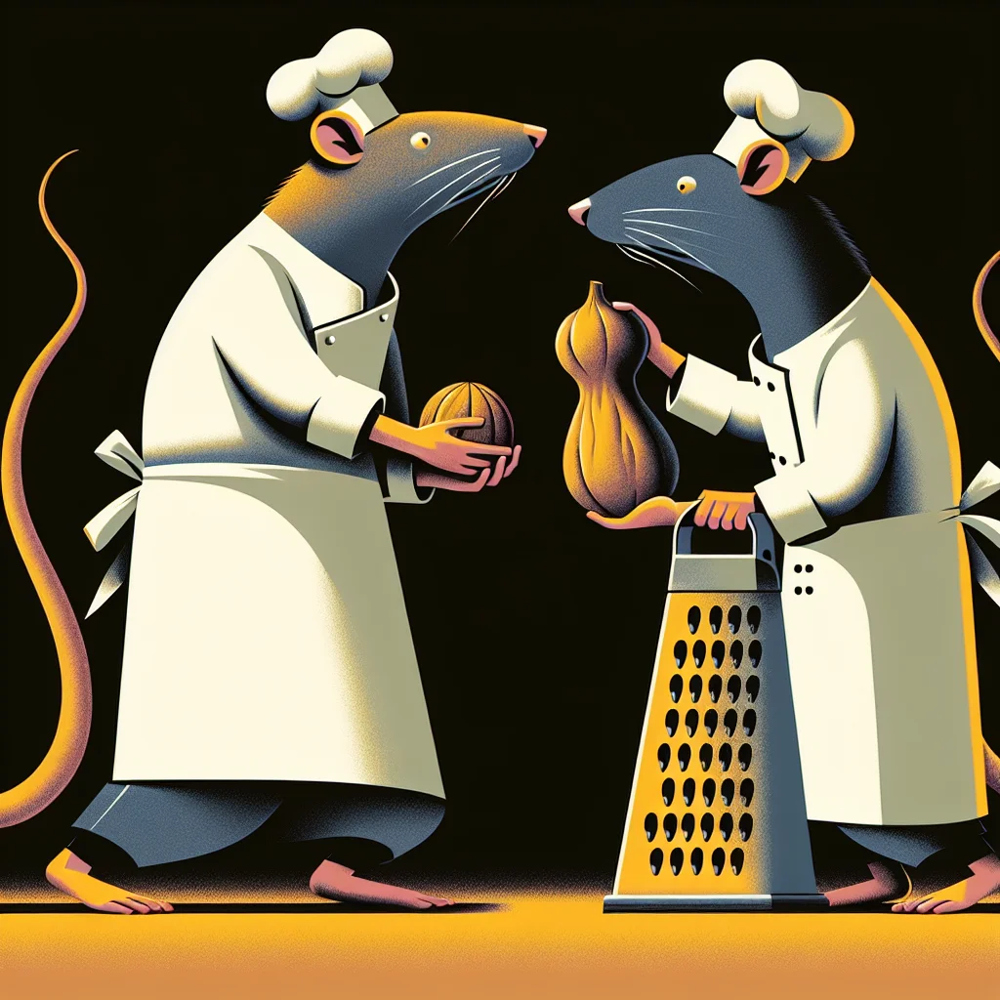

{kind=link}
{kind=link}
The Great Nutmeg Debate: Culinary Controversies and Traditions
In Ratopolis, a heated debate among chefs and residents centers around the use of nutmeg in traditional rodent recipes, reflecting broader themes of culinary identity and heritage.
5 minute read •
Comments

In the bustling kitchens of Ratopolis, a heated debate has taken Rat Chef Society by storm: should the fragrant spice, nutmeg, be a staple in traditional rodent recipes? This spicy controversy has pitted Ratopolis' renowned chefs against each other, with passionate arguments stirring both pots and emotions across the metropolis.
The history of nutmeg in rodent cuisine dates back centuries, to a time when Spice Trail traders first introduced this exotic spice to our great city. Originally, nutmeg held a place of prestige in many households, adding a unique flavor to beloved rodent dishes. Over time, however, the use of nutmeg faced opposition from traditionalists who argued that true rodent cuisine should rely on simpler, more authentic spice mixes.
At the heart of this debate are two of Ratopolis' most celebrated chefs: Chef Whiskerstein and Chef Brie. Chef Whiskerstein, a staunch proponent of nutmeg, believes that the spice brings an irreplaceable complexity to our dishes. "Nutmeg adds a whisker-licking complexity to our dishes that can't be replicated," he declares passionately. "It's part of our culinary evolution and connects us to a rich history of flavors."
On the other side of the kitchen counter stands Chef Brie, whose culinary philosophy is grounded in preserving the simplicity of ancestral recipes. "Our ancestors didn't need nutmeg to create delicious meals; why should we?" she questions. "Authenticity and tradition should steer our rat cuisine, not trends or exotic ingredients."
This clash of culinary titans has led to intense discussions in public forums, spirited debates on social media, and even tense moments at recent culinary events. Ratopolis' food critics and culinary enthusiasts have found themselves compelled to take sides, with some praising the bold use of nutmeg and others calling for a return to the simplicity of our culinary roots.
The cultural implications of the debate are as profound as the culinary ones. For many rats in Ratopolis, this controversy isn't just about a spice—it's about our identity and heritage. Nutmeg has come to symbolize the evolution of our cuisine and, by extension, our society. Are we embracing change and the new flavors it brings, or are we holding on to the traditions that have been passed down through generations?
Mrs. Squeakerson, a longtime resident of Ratopolis, sums up the sentiment of many pro-nutmeg advocates: "I think nutmeg is the spice of life! It brings warmth to our family recipes and reminds us of the diverse influences that have shaped our city." Her views reflect a broader acceptance of culinary globalization and the blending of cultures.
Contrastingly, Mr. Cheddar, fervent in his defense of traditional recipes, states, "Nutmeg? More like nut-mistake! Let's keep our traditions pure and honor the simple yet delicious flavors our ancestors cherished." For Mr. Cheddar and those who share his views, culinary heritage is best preserved through restraint and respect for the past.
While the chefs lead the charge, the public has not remained silent. Social media platforms like Squeaker have been abuzz with hashtags such as #NutmegNaysayer and #SpiceOfLife, highlighting the widespread engagement with this topic. On one end of the spectrum, we find tweets like, "Nutmeg revolutionizes our dishes! #SpiceOfLife," juxtaposed with, "Keep it simple, keep it traditional. #NutmegNaysayer." The debate has grown beyond kitchen confines, becoming a reflection of Ratopolis’ evolving identity.
Expert opinions further enrich the discussion. Dr. Nibbles, a historian specializing in rodent culinary arts, offers a dual perspective. "Nutmeg's introduction to Ratopolis cuisine was a significant historical event, reflecting trade and cultural exchanges. Yet, understanding our roots is also crucial. This debate highlights an essential balance between innovation and tradition."
The conversation takes us across Raschetta Street to the Rat Market, where vendors showcase a blend of old and new spices. Here, Nutmeg Novak, a spice seller, speaks to the commerce side of the debate. "Nutmeg sales have soared amid the controversy. It shows how culinary debates can actually drive interest and exploration. It brings our market to life!"
As we consider the broader implications of the Great Nutmeg Debate, it's apparent that this culinary clash isn't just about flavor—it's about who we are as a society and where we're headed. Will Ratopolis embrace the complexity and richness that nutmeg represents, or will we reaffirm our commitment to the pure, unadulterated tastes of our heritage?
Let’s not forget, change in cuisine often reflects societal evolution. Predicting future trends, many food critics anticipate a fusion approach, combining nutmeg with traditional elements to forge a new path in rodent culinary arts. New recipes, such as Nutmeg-Infused Cheese Bread, are already gaining popularity among adventurous young chefs.
As we ponder our plates, one thing is clear: the Great Nutmeg Debate is more than just a culinary controversy. It’s a narrative about tradition, innovation, and identity. Rats of Ratopolis, the choice is yours. Where do you stand in this flavorful debate? Join the conversation, share your thoughts on Squeaker, or try your paw at creating your own nutmeg or non-nutmeg dishes at home. Here’s to the richness of our culinary discourse—a testament to our vibrant rat society.
Whether you’re a nutmeg lover or a traditionalist, what truly matters is that we continue to celebrate and discuss our rich culinary heritage. After all, food is not just sustenance; it’s a story, and every rat in Ratopolis has a bite in telling it.
Looking for more in-depth news and exclusive content? Follow RAT TV for real-time updates, behind-the-scenes insights and the latest breaking news.
The history of nutmeg in rodent cuisine dates back centuries, to a time when Spice Trail traders first introduced this exotic spice to our great city. Originally, nutmeg held a place of prestige in many households, adding a unique flavor to beloved rodent dishes. Over time, however, the use of nutmeg faced opposition from traditionalists who argued that true rodent cuisine should rely on simpler, more authentic spice mixes.
At the heart of this debate are two of Ratopolis' most celebrated chefs: Chef Whiskerstein and Chef Brie. Chef Whiskerstein, a staunch proponent of nutmeg, believes that the spice brings an irreplaceable complexity to our dishes. "Nutmeg adds a whisker-licking complexity to our dishes that can't be replicated," he declares passionately. "It's part of our culinary evolution and connects us to a rich history of flavors."
On the other side of the kitchen counter stands Chef Brie, whose culinary philosophy is grounded in preserving the simplicity of ancestral recipes. "Our ancestors didn't need nutmeg to create delicious meals; why should we?" she questions. "Authenticity and tradition should steer our rat cuisine, not trends or exotic ingredients."
This clash of culinary titans has led to intense discussions in public forums, spirited debates on social media, and even tense moments at recent culinary events. Ratopolis' food critics and culinary enthusiasts have found themselves compelled to take sides, with some praising the bold use of nutmeg and others calling for a return to the simplicity of our culinary roots.
The cultural implications of the debate are as profound as the culinary ones. For many rats in Ratopolis, this controversy isn't just about a spice—it's about our identity and heritage. Nutmeg has come to symbolize the evolution of our cuisine and, by extension, our society. Are we embracing change and the new flavors it brings, or are we holding on to the traditions that have been passed down through generations?
Mrs. Squeakerson, a longtime resident of Ratopolis, sums up the sentiment of many pro-nutmeg advocates: "I think nutmeg is the spice of life! It brings warmth to our family recipes and reminds us of the diverse influences that have shaped our city." Her views reflect a broader acceptance of culinary globalization and the blending of cultures.
Contrastingly, Mr. Cheddar, fervent in his defense of traditional recipes, states, "Nutmeg? More like nut-mistake! Let's keep our traditions pure and honor the simple yet delicious flavors our ancestors cherished." For Mr. Cheddar and those who share his views, culinary heritage is best preserved through restraint and respect for the past.
While the chefs lead the charge, the public has not remained silent. Social media platforms like Squeaker have been abuzz with hashtags such as #NutmegNaysayer and #SpiceOfLife, highlighting the widespread engagement with this topic. On one end of the spectrum, we find tweets like, "Nutmeg revolutionizes our dishes! #SpiceOfLife," juxtaposed with, "Keep it simple, keep it traditional. #NutmegNaysayer." The debate has grown beyond kitchen confines, becoming a reflection of Ratopolis’ evolving identity.
Expert opinions further enrich the discussion. Dr. Nibbles, a historian specializing in rodent culinary arts, offers a dual perspective. "Nutmeg's introduction to Ratopolis cuisine was a significant historical event, reflecting trade and cultural exchanges. Yet, understanding our roots is also crucial. This debate highlights an essential balance between innovation and tradition."
The conversation takes us across Raschetta Street to the Rat Market, where vendors showcase a blend of old and new spices. Here, Nutmeg Novak, a spice seller, speaks to the commerce side of the debate. "Nutmeg sales have soared amid the controversy. It shows how culinary debates can actually drive interest and exploration. It brings our market to life!"
As we consider the broader implications of the Great Nutmeg Debate, it's apparent that this culinary clash isn't just about flavor—it's about who we are as a society and where we're headed. Will Ratopolis embrace the complexity and richness that nutmeg represents, or will we reaffirm our commitment to the pure, unadulterated tastes of our heritage?
Let’s not forget, change in cuisine often reflects societal evolution. Predicting future trends, many food critics anticipate a fusion approach, combining nutmeg with traditional elements to forge a new path in rodent culinary arts. New recipes, such as Nutmeg-Infused Cheese Bread, are already gaining popularity among adventurous young chefs.
As we ponder our plates, one thing is clear: the Great Nutmeg Debate is more than just a culinary controversy. It’s a narrative about tradition, innovation, and identity. Rats of Ratopolis, the choice is yours. Where do you stand in this flavorful debate? Join the conversation, share your thoughts on Squeaker, or try your paw at creating your own nutmeg or non-nutmeg dishes at home. Here’s to the richness of our culinary discourse—a testament to our vibrant rat society.
Whether you’re a nutmeg lover or a traditionalist, what truly matters is that we continue to celebrate and discuss our rich culinary heritage. After all, food is not just sustenance; it’s a story, and every rat in Ratopolis has a bite in telling it.
Looking for more in-depth news and exclusive content? Follow RAT TV for real-time updates, behind-the-scenes insights and the latest breaking news.
Comments